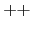

Parse::Yapp para el siguiente lenguaje.
La descripción utiliza una notación tipo BNF: las llaves indican
0 o mas repeticiones y los corchetes opcionalidad.
| program |
|
definitions { definitions } |
| definitions |
|
datadefinition |
| datadefinition |
|
basictype declarator { ',' declarator } ';' |
| declarator |
|
ID { ' |
| functiondefinition |
|
|
| basictype |
|
INT |
| functionheader |
|
ID '(' |
| parameters |
|
basictype declarator { ',' basictype declarator } |
| functionbody |
|
'{' { datadefinition } { statement } '}' |
| statement |
|
|
| constantexp |
|
exp |
| exp |
|
lvalue '=' exp |
| unary |
|
'
' lvalue |
| primary |
|
'(' exp ')' |
| lvalue |
|
ID { ' |
| argumentlist |
|
exp { ',' exp } |
Parta de la definición BNF y proceda a introducir las reglas poco a poco:
1 %token declarator basictype functionheader functionbody 2 %% 3 program: definitionslist 4 ; 5 6 definitionslist: definitions definitionslist 7 | definitions 8 ; 9 10 definitions: datadefinition 11 | functiondefinition 12 ; 13 datadefinition: basictype declaratorlist ';' 14 ; 15 16 declaratorlist: declarator ',' declaratorlist 17 | declarator 18 ; 19 functiondefinition: basictype functionheader functionbody 20 | functionheader functionbody 21 ; 22 23 %%
cosas llámela
cosaslist.
functiondefinition

 basictype
basictype  functionheader functionbody
functionheader functionbody
sustitúyala por dos reglas una en la que aparece el elemento y otra en la que no.
19 functiondefinition: basictype functionheader functionbody 20 | functionheader functionbody 21 ;
yapp la gramática
para ver si se han producido conflictos. Cuando estoy editando la gramática
suelo escribir a menudo la orden
:!yapp %
para recompilar:
15
16 declaratorlist: declarator declaratorlist
17 | declarator
18 ;
19 functiondefinition: basictype functionheader functionbody
20 | functionheader functionbody
21 ;
22
23 %%
~
~
~
~
~
~
~
~
~
~
:!yapp %
|
Esto llama a yapp con el fichero bajo edición. Si hay errores los detectaré
enseguida.
d1, d2, etc.
%token como en el código que aparece encima. De esta manera
evitará las quejas de yapp.
Las operaciones de asignación tienen la prioridad mas baja,
seguidas de las lógicas, los test de igualdad y después
de los de comparación, a continuación las aditivas, multiplicativas y por
último los unary y primary. Exprese la asociatividad natural y la
prioridad especificada usando
los mecanismos que yapp provee al efecto.
La gramática es ambigua, ya que para una sentencia como
existen dos árboles posibles: uno que asocia el ``else'' con el primer ``if'' y otra que lo asocia con el segundo. Los dos árboles corresponden a las dos posibles parentizaciones:
Esta es la regla de prioridad usada en la mayor parte de los lenguajes: un ``else'' casa con el ``if'' mas cercano. La otra posible parentización es:
Utilice los mecanismos de priorización proporcionados por yapp
para resolver el conflicto shift-reduce generado. ¿Es correcta
en este caso particular la conducta a la que da lugar la acción yapp
por defecto?
Además del tipo de terminal y su valor el analizador
léxico deberá devolver el número de línea.
El analizador léxico deberá aceptar comentarios C.
En la gramática, el terminal CHARACTER se refiere a
caracteres entre comillas simples (por ejemplo 'a').
Se aconseja que las palabras reservadas del lenguaje
no se traten con expresiones regulares específicas sino que se
capturen en el patrón de identificador [a-z_]\w+.
Se mantiene para ello un hash con las palabras reservadas
que es inicializado al comienzo del programa. Cuando
el analizador léxico encuentra un identificador
mira en primer lugar en dicho hash
para ver si es una palabra reservada y,
si lo es, devuelve el terminal correspondiente.
En caso contrario se trata de un identificador.
Extienda la práctica con reglas para la recuperación de errores. Para las listas, siga los consejos dados en la sección 7.2. En aquellos casos en los que la introducción de las reglas de recuperación produzca ambiguedad, resuelva los conflictos.
La semántica del lenguaje es similar a la del lenguaje C (por ejemplo, las expresiones lógicas se tratan como expresiones enteras). El analizador deberá producir un árbol sintáctico abstracto. Como se hizo para el lenguaje Tutu introducido en el capítulo 4, cada clase de nodo deberá corresponderse con una clase Perl. Por ejemplo, para una regla como
exp '*' exp
la acción asociada sería algo parecido a
{ bless [ $_[1], $_[3]], 'MULT' }
donde usamos un array anónimo. Mejor aún es usar un hash anónimo:
{ bless { LEFT => $_[1], RIGHT => $_[3]}, 'MULT' }
Defina formalmente el arbol especificando la gramática árbol correspondiente a su diseño (repase la sección 4.9.1). Introduzca en esta parte la tabla de símbolos. La tabla de símbolos es, como en el compilador de Tutu, una lista de referencias a hashes conteniendo las tablas de símbolos locales a cada bloque. En cada momento, la lista refleja el anidamiento de bloques actual. Es posible que, en la declaración de funciones, le interese crear un nuevo bloque en el que guardar los parámetros, de manera que las variables globales queden a nivel 0, los parámetros de una función a nivel 1 y las variables locales de la función a nivel 2 o superior.